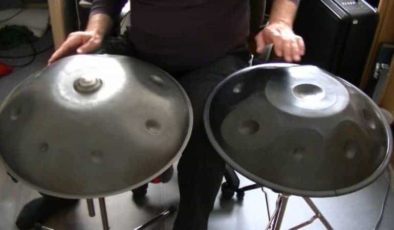
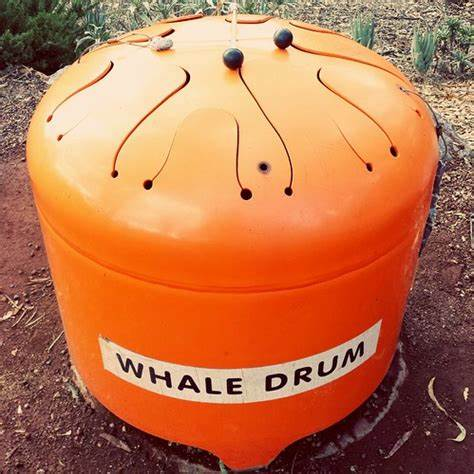

Tribago's steelpan evolutions and influence
- the steelpan has all notes in the western chromatic scales on it, so it allows anyone familiar with music of these scales to transpose their favorite songs onto this instrument. This makes it very popular among the globalized instruments because it has a unique sound that can play almost any song.
- used in The Little Mermaid soundtrack
- used in Star wars the last jedi ost (source 12)

- handpan is a newer, more portable evolution of the Ellie Mannette's steelpan (source 13)
- made in 2000 in switzerland (very new instrument relatively)
- comes in a range of sizes, styles, and finishes
- handpan has been featured in many songs from different genres (list examples)
- including game soundtracks (describe aria math from minecraft ost)

- steel tongue drum is the newest, most portable and most durable evolution of the steelpan
- comparing handpan sound to steel tongue drum (source 14)
- first iteration was made out of a steel water tank in 1990 by Jim Doble, nicknamed the "whale drum" for its large profile
- 
- in 2007, the first steel tongue drum as we know them today was made by Dennis Havlena
- featured in the soundtrack to the video game Trailmakers
Uganda globalization and commercialization
- Discuss affects that globalization, commercialization, and Christianity had on the functional perspective of music in Uganda (from source 6)
- Find out if the Embaire inspired the invention of the metal xylophones, glockenspiels, etc. and include it here if so